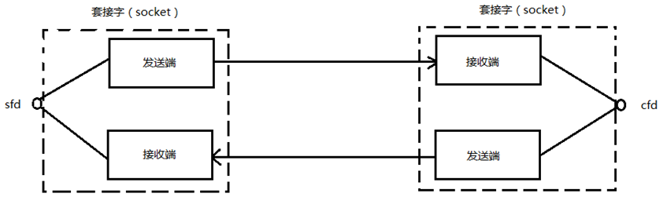
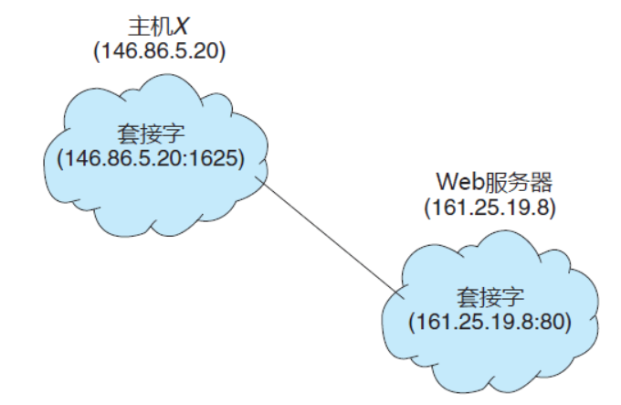

02. Socket编程概念
套接字概念
Socket本身有"插座"的意思，在Linux环境下，用于表示进程间网络通信的特殊文件类型。本质为内核借助缓冲区形成的伪文件。
既然是文件，那么理所当然的，我们可以使用文件描述符引用套接字。与管道类似的，Linux系统将其封装成文件的目的是为了统一接口，使得读写套接字和读写文件的操作一致。区别是管道主要应用于本地进程间通信，而套接字多应用于网络进程间数据的传递。
套接字的内核实现较为复杂，不宜在学习初期深入学习。
在TCP/IP协议中，"IP地址+TCP或UDP端口号"唯一标识网络通讯中的一个进程。"IP地址+端口号"就对应一个socket。欲建立连接的两个进程各自有一个socket来标识，那么这两个socket组成的socket pair就唯一标识一个连接。因此可以用Socket来描述网络连接的一对一关系。
套接字通信原理如下图所示：

套接字（socket） 为通信的端点，每个套接字由一个 IP 地址和一个端口号组成。 通过网络通信的每对进程需要使用一对套接字，即每个进程各有一个。
通常，套接字采用客户机-服务器架构。服务器通过监听指定端口，来等待客户请求。服务器在收到请求后，接受来自客户套接字的连接，从而完成连接。
实现特定服务（如 telnet、ftp 和 http）的服务器监听众所周知的端口（telnet 服务器监听端口 23，ftp 服务器监听端口 21，Web 或 http 服务器监听端口 80）。所有低于 1024 的端口都是众所周知的，我们可以用它们来实现标准服务。
当客户进程发出连接请求时，它的主机为它分配一个端口。这个端口为大于1024的某个数字。例如，当 IP 地址为 146.86.5.20 的主机 X 的客户希望与 IP 地址为 161.25.19.8 的 Web 服务器（监听端口 80）建立连接时，它所分配的端口可为1625。该连接由一对套接字组成：主机 X 上的（146.86.5.20:1625）, Web服务器上的（161.25.19.8:80）。这种情况如图 1 所示。根据目的端口号码，主机之间传输的分组可以发送到适当的进程。
